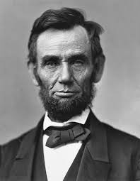

Este top fue diseñado con la informacion de:Visitawww.tvazteca.com/aztecanoticias/quienes-son-las-10-personas-mas-famosas-historia-mundial-top
| Que hizo | Imagen |
|---|---|
| 1 Jesus: Recorrió los caminos de Palestina, sanando a los enfermos, haciendo que los ciegos vieran y levantando a los muertos. Enseñó las verdades de la eternidad, la realidad de nuestra existencia premortal, el propósito de nuestra vida en la tierra y el potencial de los hijos y de las hijas de Dios en la vida venidera. | |
| 2 Napoleón:Su encumbramiento político y militar tuvo especial auge entre 1796 y 1797, años en los que cosecharía importantes victorias como Jefe del ejército francés en tierras italianas y en los que dirigiría la expedición francesa a Egipto a fin de bloquear la ruta británica con destino a la India. | |
| 3 Mahoma:Mahoma es el profeta de la religión del Islam que nació en 570 y murió en el año 632 después de Cristo. Además, proclamó el Corán, el libro sagrado islámico, el cual contiene las transcripciones de los discursos que su dios, Alá, le reveló en diversas ocasiones por parte del Arcángel Gabriel. | |
| 4 William Shakespeare: fue un dramaturgo, poeta y actor inglés. Conocido en ocasiones como el Bardo de Avon (o simplemente el Bardo), se le considera el escritor más importante en lengua inglesa y uno de los más célebres de la literatura universal.El dramaturgo inglés William Shakespeare escribió al menos 37 obras teatrales y 154 sonetos. Los personajes de sus obras trascendieron en el tiempo y las tramas muestran experiencias familiares con las que las persona se pueden identificar. Sus historias han sido adaptadas a todo tipo de formatos. | |
| 5 Abraham Lincoln:Abraham Lincoln fue el décimo sexto presidente de Estados Unidos de 1861 a 1865. Conservó la unión de la nación durante la Guerra Civil de 1861 a 1865 y abolió la esclavitud.El Presidente Abraham Lincoln emitió la Proclamación de Emancipación el 1ro de enero de 1863, cuando la nación se acercaba a su tercer año de la guerra civil sangrienta. La proclamación declaró “que todas las personas detenidas como esclavos” dentro de los estados rebeldes “son, y en adelante serán libres.”17 |  | Video complementario: LAS 10 PERSONAS MÁS FAMOSAS DEL MUNDO |